soulellis.com /2013 /05 /search-compile-publish
Search, Compile, Publish
Towards a new artist’s web-to-print practice.
Paul Soulellis
May 2013
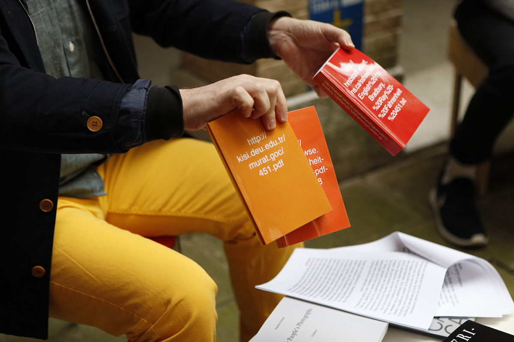
“Search, Compile, Publish” was originally delivered as a talk at The Book Affair, Venice, Italy, May 2013.
It was self-published as a newsprint broadsheet, in an edition of 500, and distributed for free at the NY Art Book Fair, September 2013.
A 2016 update was delivered as a talk at Miss Read, Berlin, June 2016.
It was published in Publishing Manifestos, edited by Michalis Pichler, published by MIT Press in March 2019.
I collect artists’ books, zines and other work around a simple curatorial idea: web culture articulated as printed artifact. I began the collection, now called Library of the Printed Web, because I see evidence of a strong web-to-print practice among many artists working with the internet today, myself included. All of the artists—more than 30 so far, and growing—work with data found on the web, but the end result is the tactile, analog experience of printed matter.
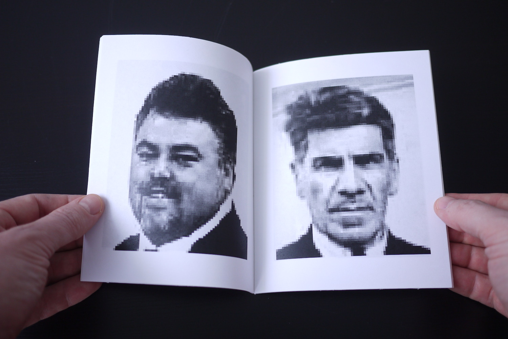
Penelope Umbrico, Many Leonards Not Natman, 2010, 56 pages.
Looking through the works, you see artists sifting through enormous accumulations of images and texts. They do it in various ways—hunting, grabbing, compiling, publishing. They enact a kind of performance with the data, between the web and the printed page, negotiating vast piles of existing material. Almost all of the artists here use the search engine, in one form or another, for navigation and discovery.
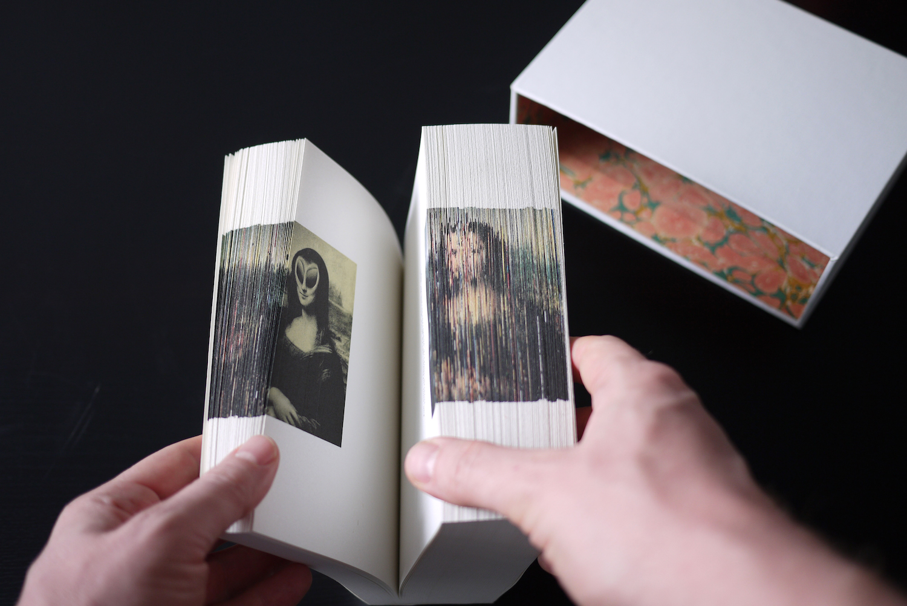
Fraser Clark, Mona Lisa, 2013, 480 pages.
These are artists who ask questions of the web. They interpret the web by driving through it as a found landscape, as a shared culture, so we could say that these are artists who work as archivists, or artists who work with new kinds of archives. Or perhaps these are artists who simply work with an archivist’s sensibility—an approach that uses the dynamic, temporal database as a platform for gleaning narrative.

Karolis Kosas, zines from Anonymous Press (Captcha, Fake, JPG, Reflection, Search), 2013.
In fact, I would suggest that Library of the Printed Web is an archive devoted to archives. It’s an accumulation of accumulations, a collection that’s tightly curated by me, to frame a particular view of culture as it exists right now on the web, through print publishing. That documents it, articulates it.
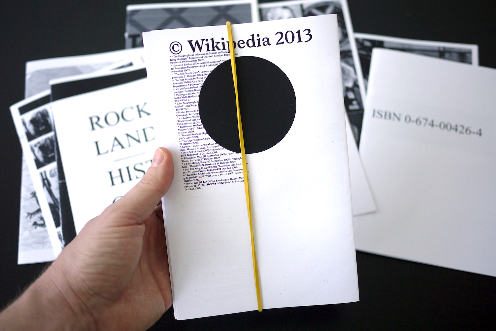
Lauren Thorson, Wikipedia Random Article Collection 2013, 13 booklets.
And I say right now because this is all new. None of the work in the inventory is more than five years old—some of it just made in the last few weeks. We know that net art has a much longer history than this, and there are relationships between net-based art of the 90s and early 2000s and some of the work found here. And certainly there are lines that could be drawn even further into history—the use of appropriation in art going back to the early 20th century and beyond. And those are important connections.
But what we have here in Library of the Printed Web is something that’s entirely 21st century and of this moment: a real enthusiasm for self-publishing, even as its mechanisms are still evolving. More than enthusiasm—it could be characterized as a mania—that’s come about because of the rise of automated print-on-demand technology in only the last few years. Self-publishing has been around for awhile. Ed Ruscha, Marcel Duchamp, Benjamin Franklin (The Way to Wealth), Virginia Woolf (Hogarth Press) and Walt Whitman (Leaves of Grass) all published their own work. But it was difficult and expensive and of course that’s all changed today.
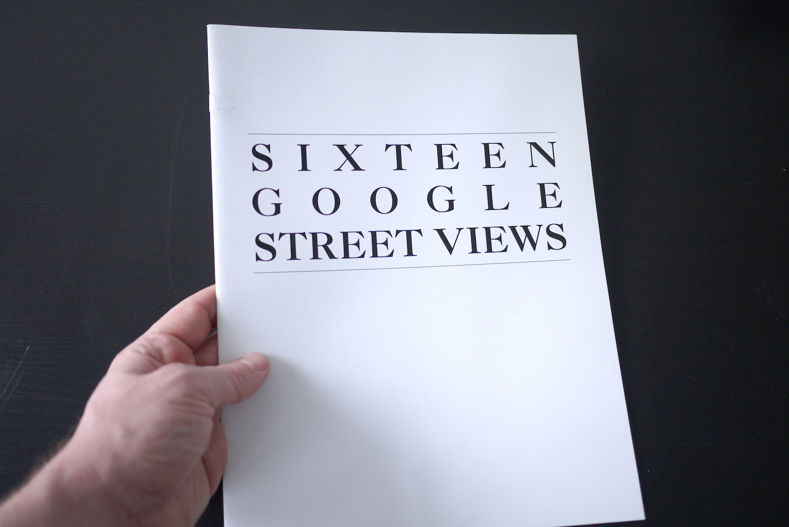
Jon Rafman, Sixteen Google Street Views, 2009, 20 pages.
Lulu was founded in 2002 and Blurb in 2004. These two companies alone make most of this collection reproducible with just a few clicks. I could sell Library of the Printed Web and then order it again and have it delivered to me in a matter of days. Just about. Only half of it is print-on-demand, but in theory, the entire collection should be available as a spontaneous acquisition; perhaps it soon will be. With a few exceptions, all of it is self-published or published by micro-presses and that means that I communicate directly with the artists to acquire the works.
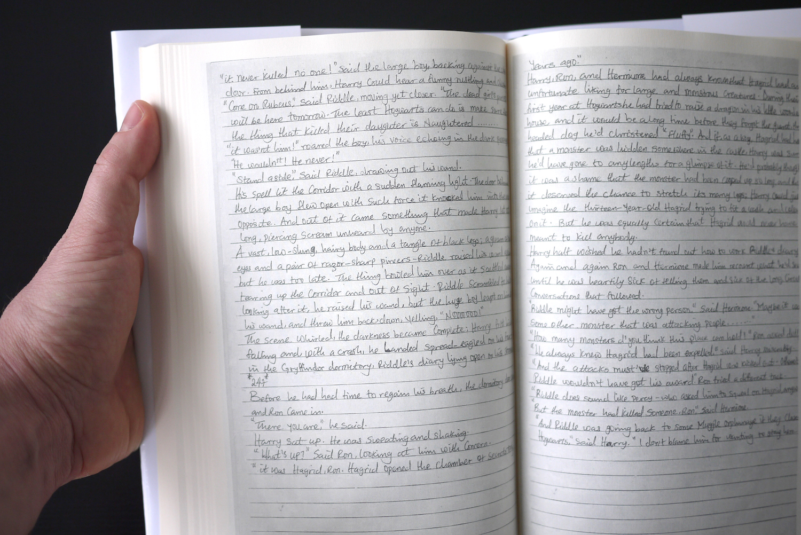
Mishka Henner, Harry Potter and the Scam Baiter, 2012, 334 pages.
Besides print-on-demand, some of it is also publish-on-demand, and both of these ideas put into question many of our assumptions about the value we assign to net art, artists’ books and the photobook. The world of photobook publishing, for example, is narrow and exclusive and rarified—it’s an industry that designs and produces precious commodities that are beautiful and coveted, for good reason, with a premium placed on the collectable—the limited edition, the special edition, and even the idea of the sold-out edition. (See David Horvitz’s stock photography project Sad, Depressed, People, pictured above—one of a few non-self-published and not printed-on-demand photobooks in Library of the Printed Web). Controlled scarcity is inherent to high-end photobook publishing’s success.
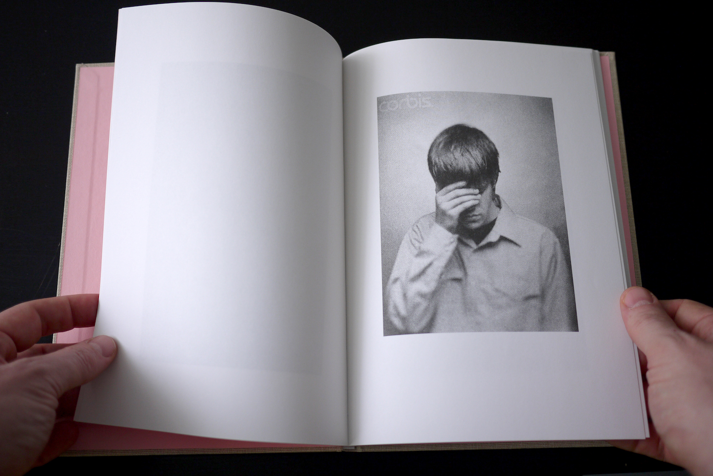
David Horvitz, Sad, Depressed, People, New Documents, 2012, 64 pages.
But many of the works in Library of the Printed Web will never go out of print, as long as the artists makes them easily available. There is something inherently not precious about this collection. Something very matter-of-fact, straight-forward or even “dumb” in the material presentation of web culture as printed artifact. It’s the reason I show the collection in a wooden box. It’s utilitarian and functional and a storage container—nothing more than that.
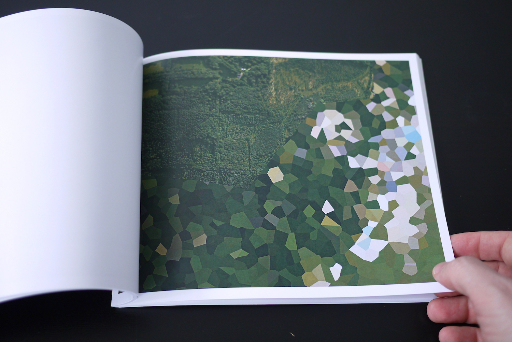
Mishka Henner, Dutch Landscapes, 2011, 106 pages.
So we have print-on-demand as a common production technique. But what about the actual work? What concepts on view here might suggest what it means to be an artist who cultivates a web-to-print practice? And how is print changing because of the web? Are there clues here?
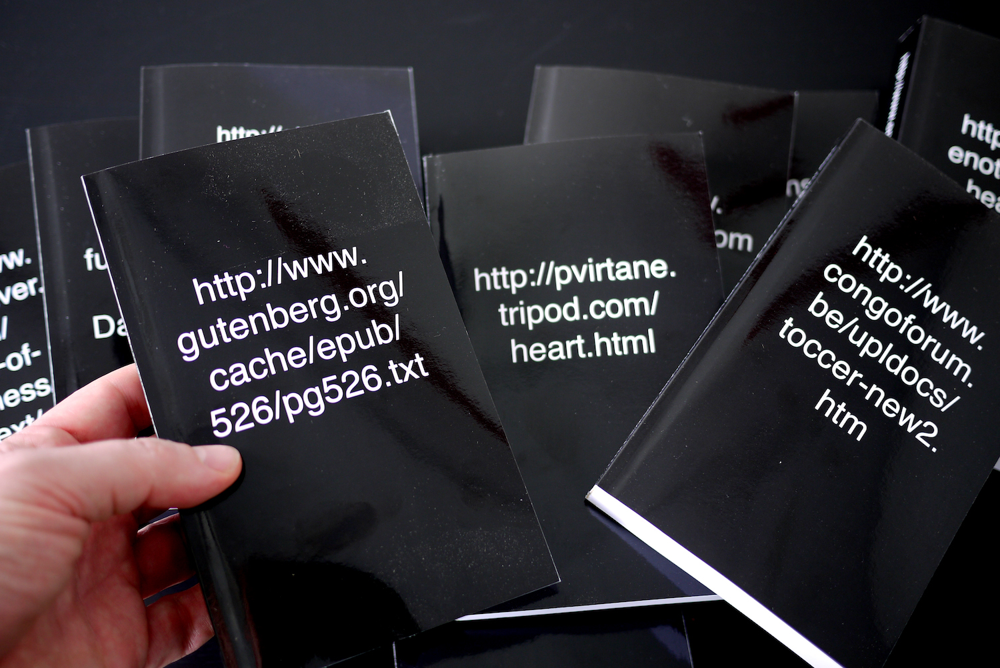
Stephanie Syjuco, Re-editioned texts: Heart of Darkness, 2012, set of 10 books.
The content of these books varies wildly, but I do see three or maybe four larger things at work, themes if you will. And these themes or techniques have everything to do with the state of technology right now—screen-based techniques and algorithmic approaches that for the most part barely existed in the 20th century and may not exist for much longer. If something like Google Glass becomes the new paradigm, for example, I could see this entire collection becoming a dated account of a very specific moment in the history of art and technology, perhaps spanning only a decade. And that’s how I intend to work with this collection—as an archive that’s alive and actively absorbing something of the moment, as it’s happening, and evolving as new narratives develop.
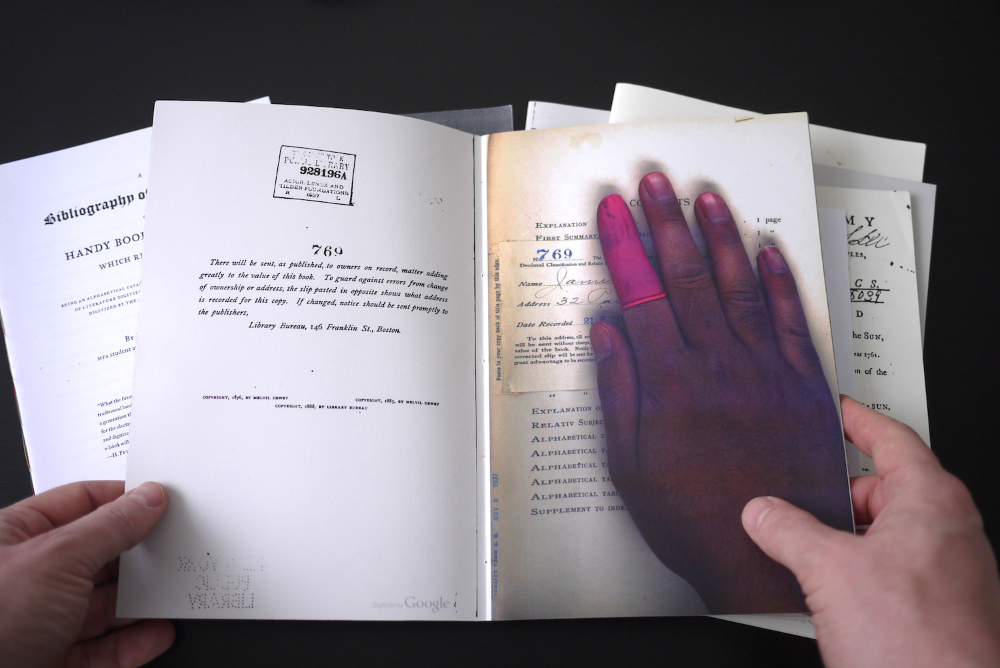
Benjamin Shaykin, Special Collection, 2009.
So here are three or four very basic ideas at the heart of Library of the Printed Web. These are by no means comprehensive, and in each case the techniques that are described cross over into one another. So this isn’t a clean categorization, but more of a rough guide. My goal is not to define a movement, or an aesthetic. At best, these are ways of working that might help us to unpack and understand the shifting relationships between the artist (as archivist), the web (as culture) and publishing (as both an old and a new schema for expressing the archive).
Paul Soulellis, Library of the Printed Web, installation view, 2013.
Grabbing (and scraping)
The first category is perhaps the most obvious one. I call them the grabbers. These are artists who perform a web search query and grab the results. The images or texts are then presented in some organized way. The grabbing is done with intent, around a particular concept, but of primary importance is the taking of whole images that have been authored by someone else, usually pulled from the depths of a massive database that can only be navigated via search engine.

Travis Hallenbeck, Flickr favs, 2010, 315 pages.
So a key to grabbing is the idea of authorship. The material being grabbed from the database, whether it be Google or Flickr or a stock photography service, is at least once removed from the original source, sometimes much more. The grabbing and re-presenting under a different context (the context of the artist’s work) make these almost like readymades—appropriated material that asks us to confront the nature of meaning and value behind an image that’s been stripped of origin, function and intent.

Travis Hallenbeck, Flickr favs, 2010, 315 pages.
A defining example of a grabber project is Joachim Schmid’s Other People’s Photographs. Amateur photographs posted publicly to Flickr are cleanly lifted, categorized and presented in an encyclopedic manner. This was originally a 96-volume set, and this is the two-volume compact edition, containing all of the photographs. Removed from the depths of Flickr’s data piles, banal photographs of pets or plates of food or sunsets are reframed here as social commentary. Schmid reveals a new kind of vernacular photography, a global one, by removing the author and reorganizing the images according to pattern recognition, repetition and social themes—the language of the database. The work’s physicality as a set of books is critical, because it further distances us from the digital origins of the images. By purchasing, owning, and physically holding the printed books we continue Schmid’s repossession of “other people’s photographs” but shift the process by taking them out of his hands, so-to-speak. This idea is made even more slippery, and I would say enriched, by it being a print-on-demand work.
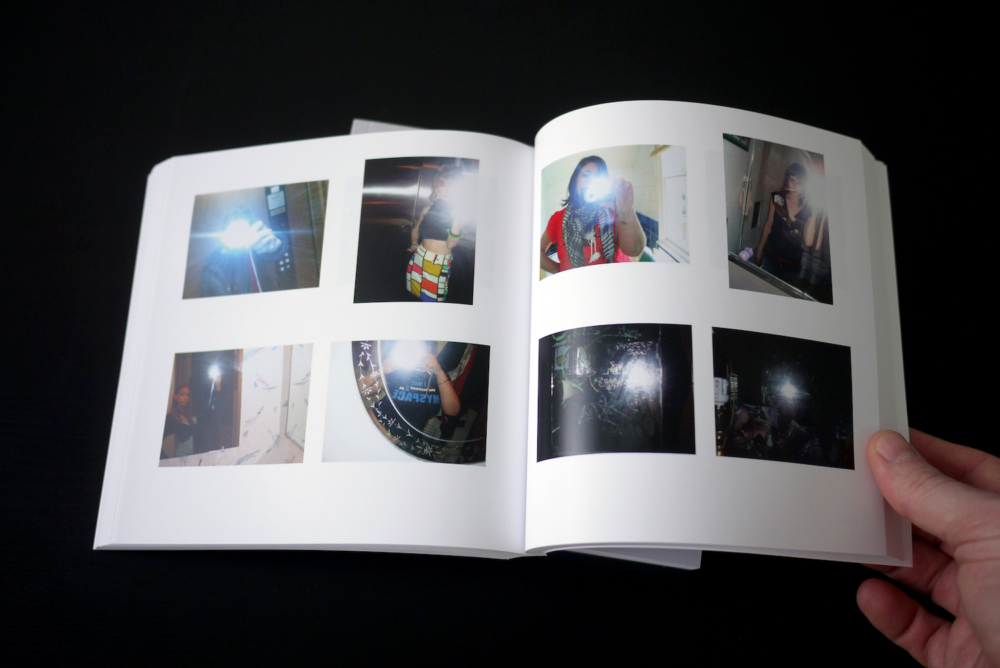
Joachim Schmid, Other People’s Photographs, Volumes I & II, 2011, 400 pages each.
Texts can be grabbed too. Stephanie Syjuco finds multiple versions of a single text-based work in the public domain, like Ray Bradbury’s Fahrenheit 451 or Joseph Conrad’s Heart of Darkness (part of Syjuco’s installation Phantoms (H__RT _F D_RKN_SS)). She downloads the texts from different sources and turns them into “as is” print-on-demand volumes, complete with their original fonts, links, ads, and mistranslations. She calls them re-editioned texts. By possessing and comparing these different DIY versions as print objects she lets us see authorship and publishing as ambiguous concepts that shift when physical books are made from digital files. And that a kind of re-writing might occur each time we flip-flop back-and-forth from analogue to digital to analogue.
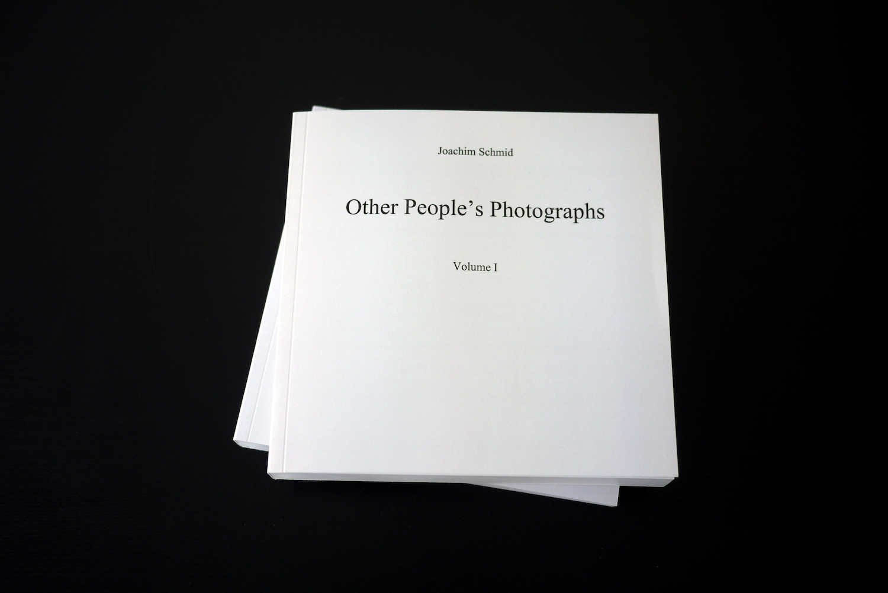
Joachim Schmid, Other People’s Photographs, Volumes I & II, 2011, 400 pages each.
If a grabber works in bulk, I’m tempted to call it scraping. Site scrape is a way to extract information from a website in an automated way. Google does it every day when it scrapes your site for links, in order to produce its search results. Some grabbers write simple scripts to scrape entire websites or APIs or any kind of bulk data, and then they “send to print,” usually with little or no formatting. The data is presented as a thing in itself.

John Cayley and Daniel C. Howe, How It Is in Common Tongues, 2012, 300 pages.
Grabbing and republishing a large amount of data as text is at the heart of conceptual poetry, or “uncreative writing,” a relatively recent movement heralded by Kenneth Goldsmith. In conceptual poetry, reading the text is less important than thinking about the idea of the text. In fact, much of conceptual poetry could be called unreadable, and that’s not a bad thing.
Goldsmith tweeted recently: No need to read. A sample of the work suffices to authenticate its existence.
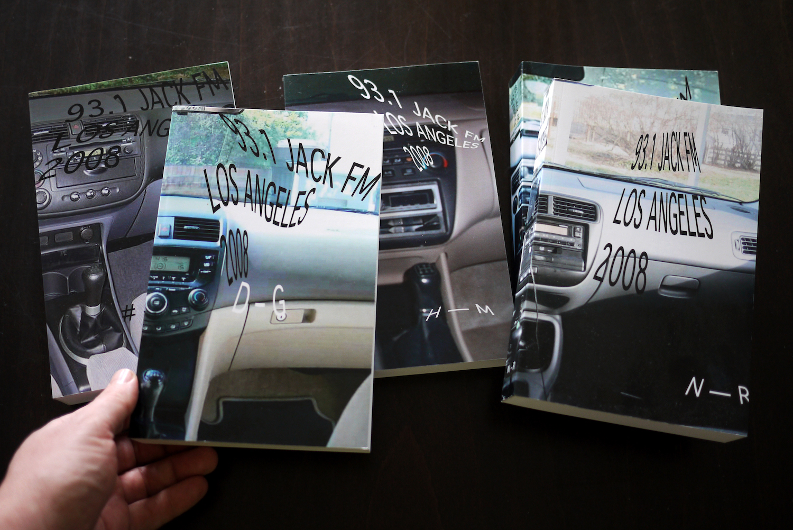
Guthrie Lonergan, 93.1 JACK FM LOS ANGELES 2008, 2008, 3,070 pages (set of five books).
Guthrie Lonergan’s 93.1 JACK FM LOS ANGELES 2008 is a good example of a scraper project. JACK FM radio stations don’t have DJs—the format is compared to having an iPod on shuffle. Lonergan wrote a simple script to download all of the activity of one of these JACK FM radio stations over the course of a year—the date, time, artist and the title of every track played—and presents it as a 3,070-page, five-volume set of print-on-demand books. The presentation of the data in bulk is the thing, and the project is richer because of it. Again, the questions at hand are about authorship, creativity, ownership and the nature of decision-making itself—human vs machine. As Lonergan says on his site, Who is Jack? . . . How much of this pattern is algorithmic and how much is human? You might begin to read the juxtaposed song titles as poetry.
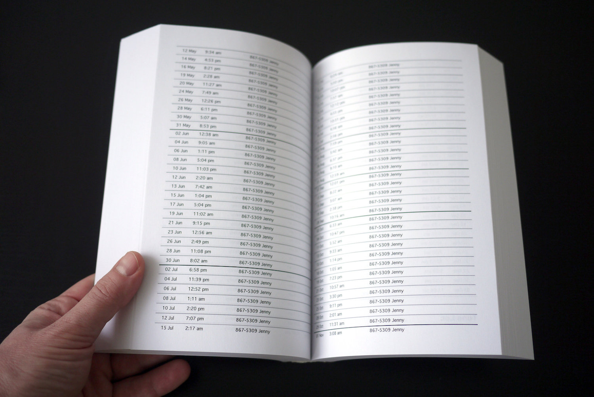
Guthrie Lonergan, 93.1 JACK FM LOS ANGELES 2008, 2008, 3,070 pages (set of five books).
Chris Alexander’s language-based McNugget project is another scraper, or so I thought. This work of poetry is a massive index of tweets containing the word “mcnugget” from February to March 6, 2012, nothing more and nothing less. I was curious about how he did it—if he was a grabber or more of a scraper, if you will, and I asked him that directly. Here’s his response:
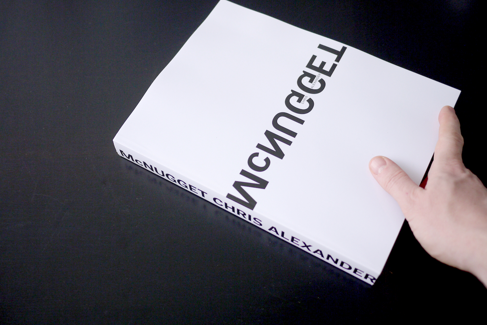
Chris Alexander, McNugget, Troll Thread, 2013, 528 pages.
Somewhere early in the process, I discussed automated methods of capture using the Twitter API with a programmer friend, but in the end I opted for the manual labor of the search because I was interested in experiencing the flow of information firsthand and observing the complex ways the word is used (as a brand/product name, as an insult, as a term of endearment, as a component of usernames, etc.) as they emerged in the moment. Most of my work is focused on social and technical systems and the ways they generate and capture affect, so I like to be close to the tectonics of the work as they unfold—feeling my way, so to speak—even in ‘pure,’ Lewitt-style conceptual projects whose outcome is predetermined. Getting entangled with what I’m observing is an important part of the process. At the same time, I think it’s useful to acknowledge that much of what I do could be automated—and in fact, I use a variety of layered applications and platforms to assist in my work most of the time. Somewhere in the space between automation and manual/affective labor is the position I’m most interested in. [email 5/20/13]
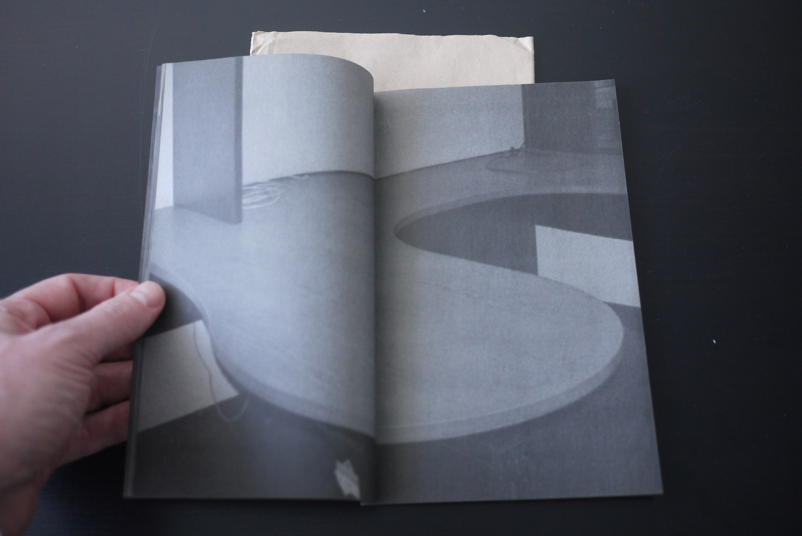
Penelope Umbrico, Desk Trajectories (As Is), 2010, 60 pages.
So, his process isn’t automated. It’s not scraping. But the potential to automate and this connection to conceptual art and predetermined outcome intrigues me—“the idea becomes a machine that makes the art” (Sol Lewitt). The art may be reduced to a set of instructions (like code?), and the execution is secondary, if necessary at all (dematerialization of the art object). So does it matter if the execution—the grabbing—is done by a human or a bot? Of course it does, but perhaps along a different axis, one that looks at this idea of entanglement vs. non-interference. But that’s another matter, one that I won’t address here. I’ve come to suspect, after this discussion with Chris, that the distinction between grabbers and scrapers, on its own, is not so important after all. Without more information, it doesn’t reveal anything about artistic intent or the nature of the object that’s been created.

Andrew LeClair, Occupy Wall Street, Ether Press, 2011, 500 pages.
Hunting
So, let’s talk about hunters. Some of the more well-known works in the collection are by artists who work with Google Street View and Maps and other database visualization tools. The work is well-known because these are the kinds of images that tend to go viral. Rather than grabbing pre-determined results, these artists target scenes that show a certain condition—something unusual or particularly satisfying. I call them the hunters. The hunter takes what’s needed and nothing more, usually a highly specific screen capture that functions as evidence to support an idea. Unlike grabbers, who are interested in how the search engine articulates the idea, hunters reject almost all of what they find because they’re looking for the exception. They stitch together these exceptional scenes to expose the database’s outliers—images that at first appear to be accidents but as a series actually expose the absolute logic of the system.
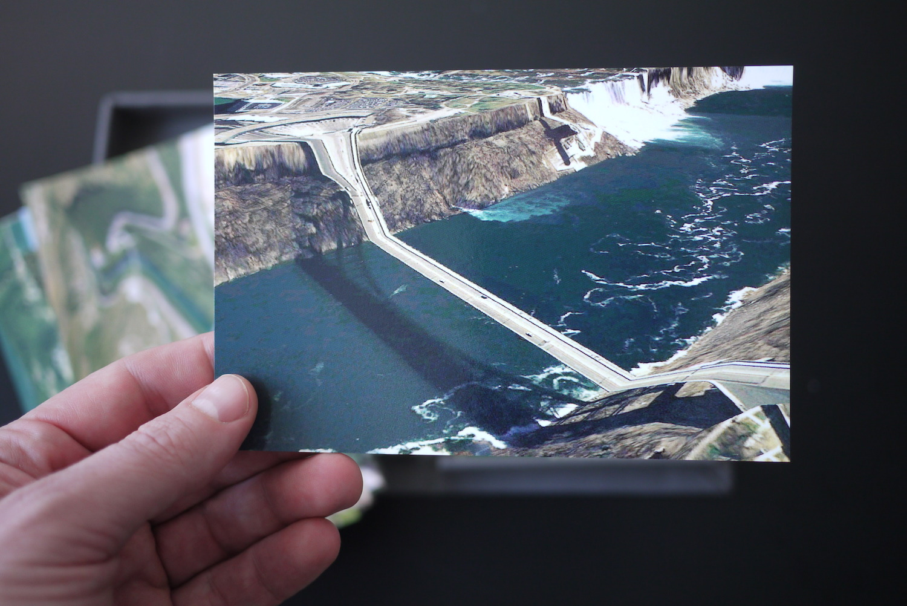
Clement Valla, Postcards from Google Earth, 2010.
A great example of this is Clement Valla’s project Postcards from Google Earth. He searches Google Earth for strange moments where bridges and highways appear to melt into the landscape. He says: “They reveal a new model of representation: not through indexical photographs but through automated data collection from a myriad of different sources constantly updated and endlessly combined to create a seamless illusion; Google Earth is a database disguised as a photographic representation.” Google calls its mapping algorithm the Universal Texture and Valla looks for those moments where it exposes itself as “not human.” When the algorithm visualizes data in a way that makes no sense to us, as humans in the physical world—the illusion collapses. By choosing to print his images as postcards, Valla says he’s “pausing them and pulling them out of the update cycle.” He captures and prints them to archive them, because inevitably, as the algorithms are perfected, the anomalies will disappear.
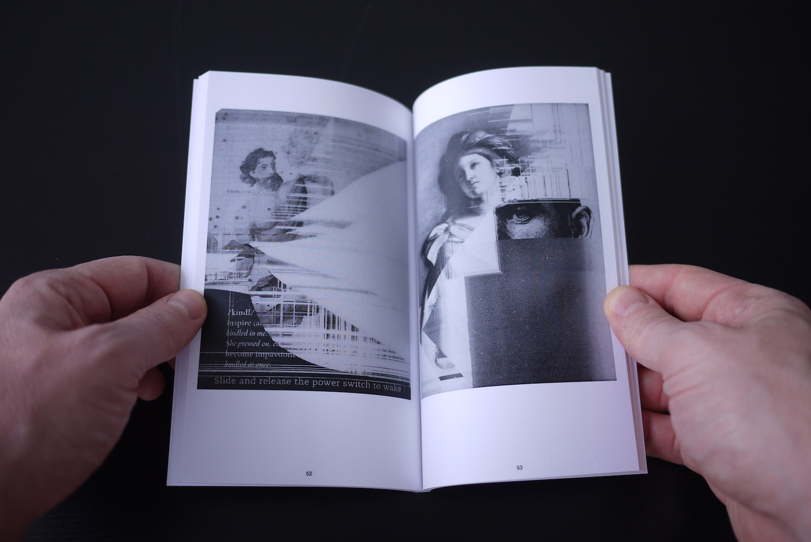
Silvio Lorusso and Sebastian Schmieg, 56 Broken Kindle Screens, 2012, 78 pages.
Performing
The remaining set of works in Library of the Printed Web is a group I call the performers. This is work that involves the acting out of a procedure, in a narrative fashion, from A to B. The procedure is a way to interact with data and a kind of performance between web and print—the end result being the printed work itself. Of course, every artist enacts a kind of performative, creative process, including the hunters and grabbers we’ve looked at so far. But here are a few works that seem to be richer when we understand the artist’s process as a performance with data.
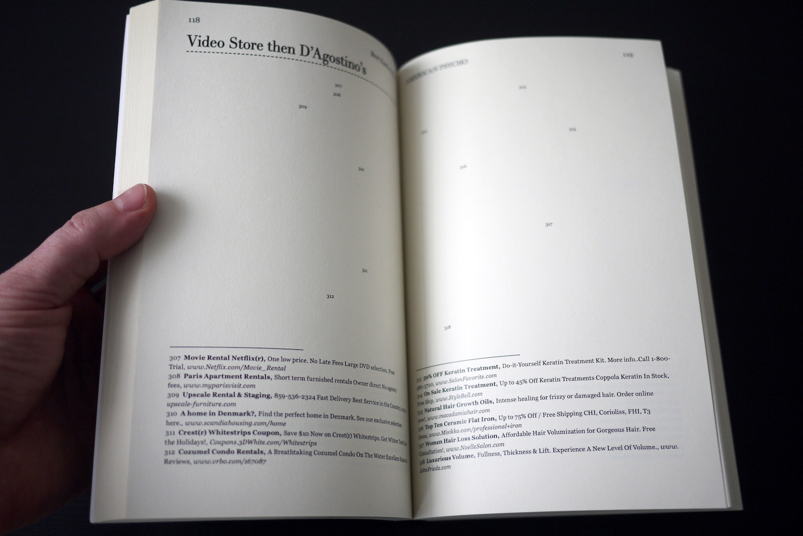
Mimi Cabell and Jason Huff, American Psycho, 2010, 408 pages.
One of my favorite works in the collection is American Psycho by Jason Huff and Mimi Cabell, and it’s performative in this way. The artists used Gmail to email the entire Bret Easton Ellis novel back and forth, sentence by sentence, and then grabbed the context-related ads that appeared in the emails to reconstruct the entire novel. Nothing appears except blank pages, chapter titles, and footnotes containing all of the ads. Again, another unreadable text, aside from a sample here or there. But the beauty is in the procedure—a performance that must be acted out in its entirety, feeding the text into the machine, piece by piece, and capturing the results. It’s a hijacking of both the original novel and the machine, Google’s algorithms, mashing them together, and one can almost imagine this as a durational performance art piece, the artists acting out the process in real time. The end result, a reconstructed American Psycho, is both entirely different from and exactly the same as the original, both a removal and a rewriting, in that all that’s been done is a simple translation, from one language into another.
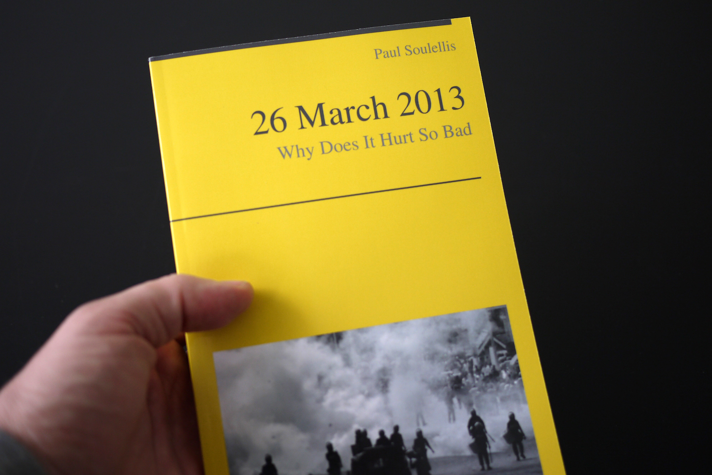